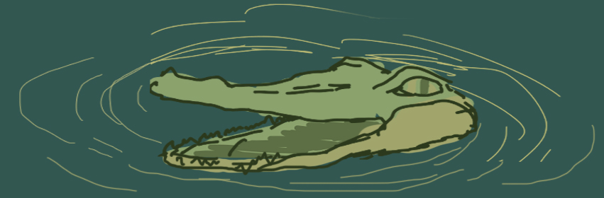
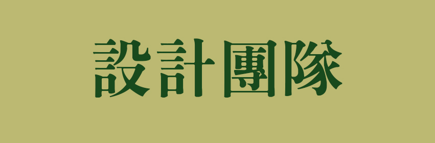
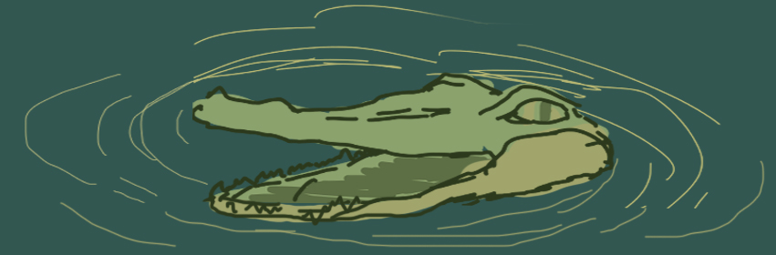
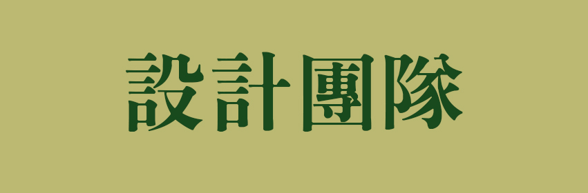

|  |
 |
 |
 |
 |
 |  |
|  |
|
|
|
|
 | |
鱷魚雖然生活在湖泊、沼澤等有水的地方。
其實鱷魚不是魚，而是一種冷血的卵生爬行動物，是和恐龍同時代的產物。
距今已有2 億年歷史，和它最近的親戚不是蜥蜴、烏龜等爬行動物，而是鳥類。
鱷魚一雙眼睛浮在水面，誰想到居然是用後腿走的？
其實在西非內陸國家布吉納法索一個叫巴祖萊的村落里有一種尼羅鱷
它們就有一項神技能，就是可以像人類一樣直立行走。
鱷魚的眼睛由上眼瞼、下眼瞼和內眼瞼（瞬膜）構成，和蛇的眼睛一樣
內眼瞼（瞬膜）是一層透明的眼瞼，鱷魚在陸地上待久了，瞬膜就會分泌液體，出現流淚現象
鱷魚吃食物時流淚有研究說是鱷魚為了排泄體內多餘的鹽分，其實鱷魚的眼淚既跟假慈悲或憂傷沒關係，也不是為了排鹽，只是為了濕潤眼睛，起潤滑作用罷了
鱷魚一般都是將獵物整個吞下，無法完成咀嚼的
因為它的下頜無力且只能上下移動，不能側向移動，所以它只能重擊食物然後拖下水吞食
鱷魚有一個秘密法寶，就是它的舌頭可以向後堵住咽喉
可以在潛水時關閉，在水中吃東西也不會被嗆到
雖然長期生活在河灣、淺灘、沼澤中，環境惡劣骯髒，細菌、病毒泛濫，有時鱷魚相互打鬥撕咬得遍體鱗傷
但從未感染細菌和病毒，體內也未發現致病細菌
經科學研究證明原來是鱷魚血液有一種非常奇特球狀構造的血紅蛋白胺基酸鏈，攜氧量超過其它動物100 倍以上
能夠殺死極度破壞人體免疫系統的愛滋病毒，更不用說其它正常的病毒和細菌了